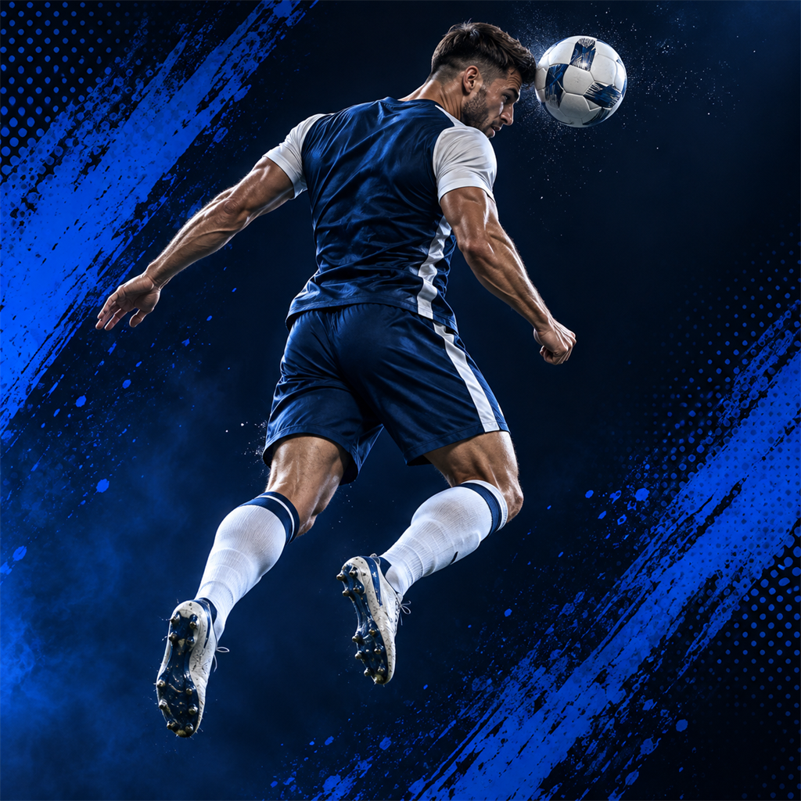
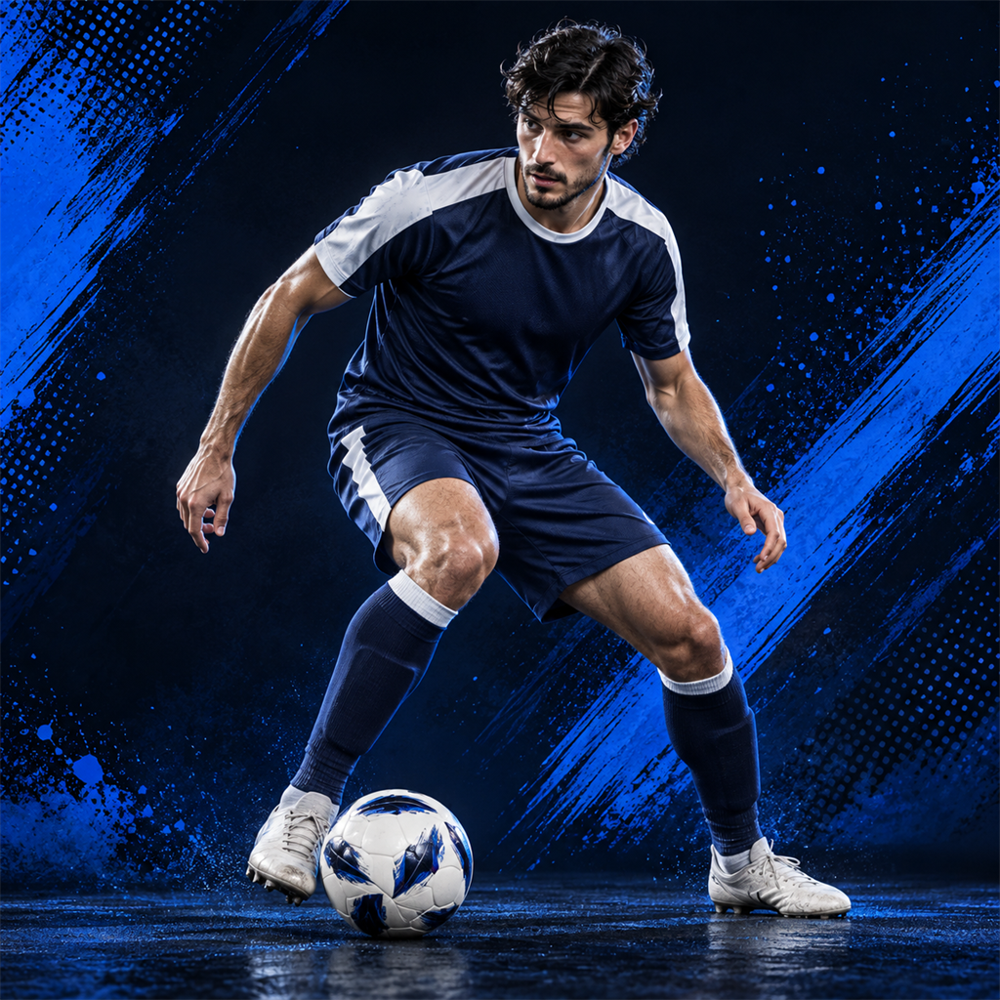
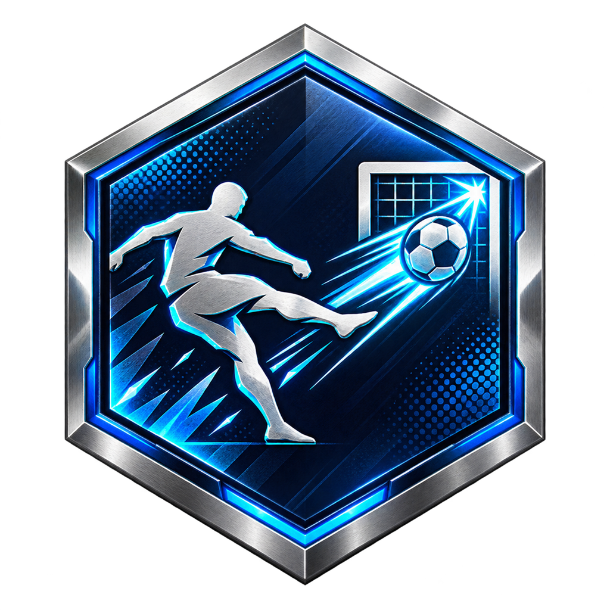
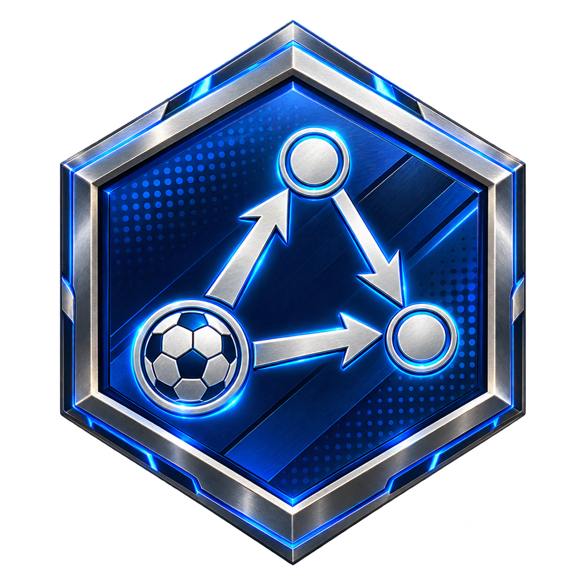
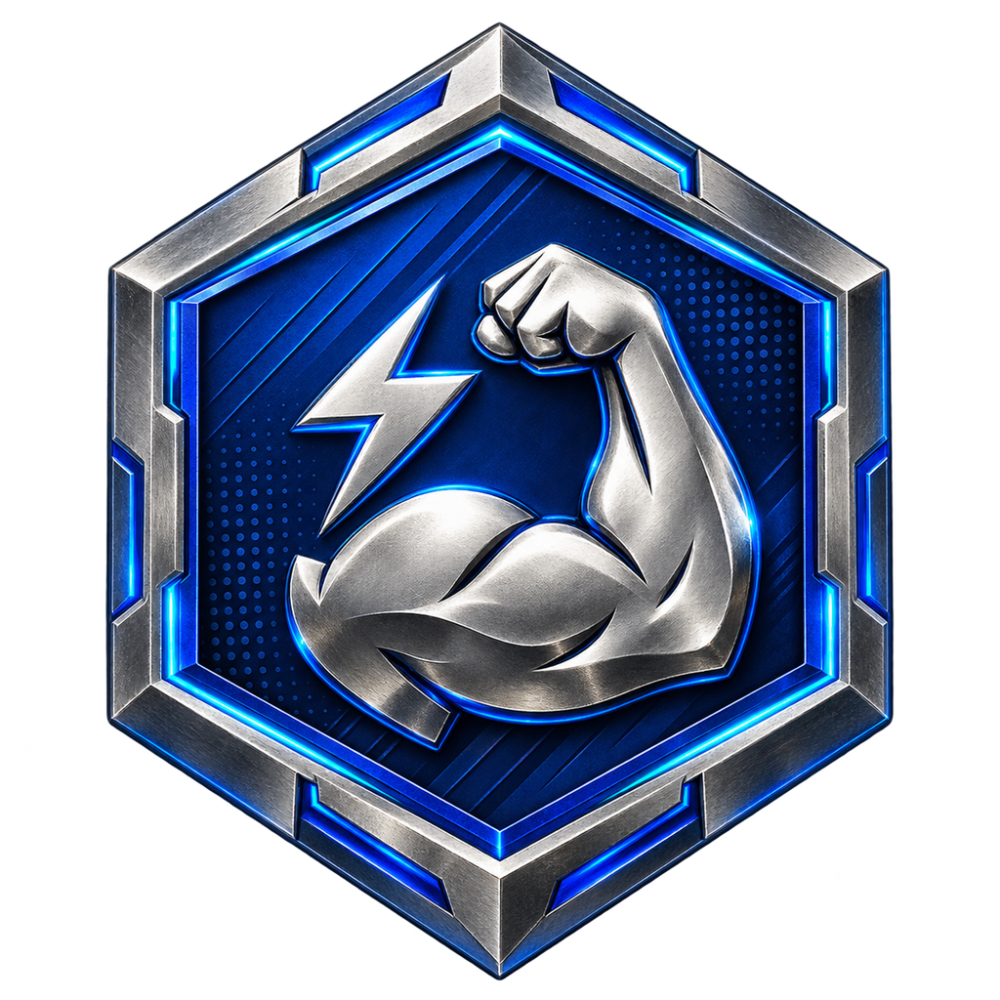
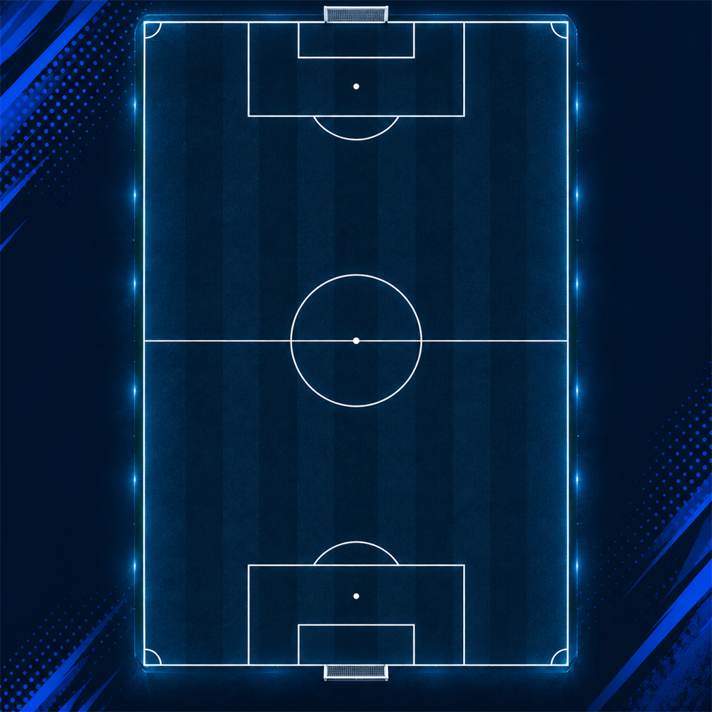
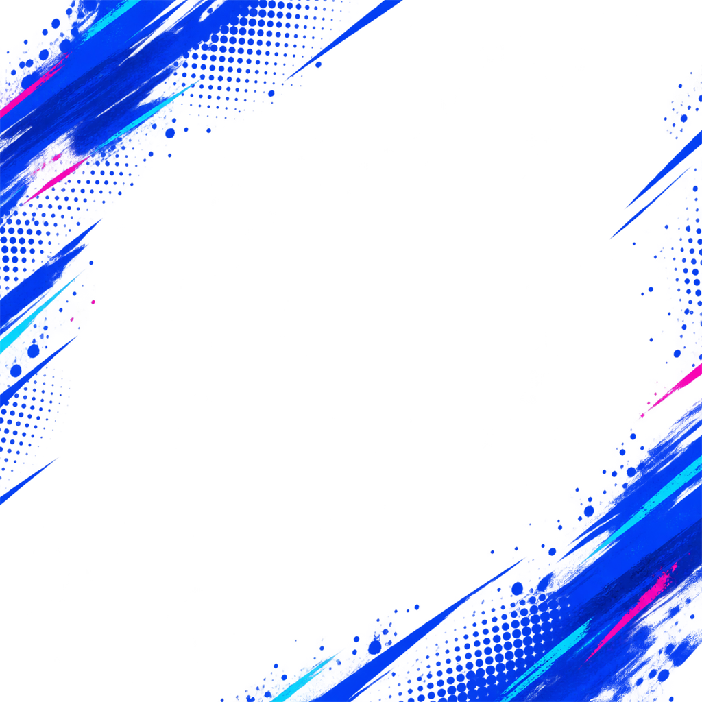

← Retour à FC 27Le prochain chapitre.
21 visuels · PNG 1024 × 1024 · Générés avec l’outil image intégré
Cliquer sur un visuel ouvre le fichier original. Le damier de cette page permet de voir les zones transparentes.
Les 13 archétypes
Finisherarchetypes/finisher.png

Targetarchetypes/target.png

Magicianarchetypes/magician.png
Sparkarchetypes/spark.png
Disruptorarchetypes/disruptor.png
Maestroarchetypes/maestro.png
Creatorarchetypes/creator.png
Recyclerarchetypes/recycler.png
Bossarchetypes/boss.png
Progressorarchetypes/progressor.png
Marauderarchetypes/marauder.png
Shot Stopperarchetypes/shot_stopper.png
Sweeper Keeperarchetypes/sweeper_keeper.png
Les 6 familles PlayStyles

Tirplaystyles/playstyle_scoring.png · Transparent

Passeplaystyles/playstyle_passing.png · Transparent
Dribbleplaystyles/playstyle_dribbling.png · Transparent
Défenseplaystyles/playstyle_defending.png · Transparent

Physiqueplaystyles/playstyle_physical.png · Transparent
Gardienplaystyles/playstyle_goalkeeper.png · TransparentTerrain & textures

Terrain tactiqueui/tactical_pitch.png

Overlay graphiqueui/fifa20_pattern_overlay.png · Transparent{kind=link}
{kind=link}
{kind=link}
{kind=link}
{kind=link}
{kind=link}
{kind=link}
{kind=link}
{kind=link}
{kind=link}
{kind=link}
{kind=link}
{kind=link}
{kind=link}
{kind=link}
{kind=link}
{kind=link}
{kind=link}
{kind=link}
{kind=link}
{kind=link}